Adding and Editing Content
How to add and edit content in the new Extension website depends on the content type.
Content Entry Workflow
In general, you will need to follow these steps when entering content on the Extension website:
- See if the content already exists on the site.
- Determine whether the content is appropriate for the Extension website.
- Check that the content meets quality and legal standards.
- Determine which Group and content type you should use.
- See Getting started with Content and the Content Type descriptions below.
- If you are planning to upload a file, check out File Management.
- Log in to the site and go to your My Groups page. Select the group you identified in step 4 and click the “add” button for the desired content type.
- See Using the site.
- Fill out the fields for the content and save.
- See the appropriate content type section below.
- Publish the content when it is ready.
- Make sure that the content is displaying everywhere it needs to. Update the tags if necessary.
- Periodically check the content to ensure it is still relevant. Archive it if it goes out of date.
- See Managing Content: Content Publishing later in this guide.
Announcement
What Is an Announcement
A short, time-sensitive piece of information that you need to call attention to. Also used to advertise seasonal services such as clinics and hotlines.
Examples:
- An office closure
- An application or registration deadline
- Master Gardener plant clinic information
- A notice about food safety recalls or pest alerts
Announcements are not for individual events such as a workshop or lecture. Also, announcements only display on the site for a set period of time, so they shouldn’t be content that needs to remain visible long-term.
Who Can Add Announcements
Members of program or county office groups. If an announcement applies to more than one county or program, coordinate to make sure to add it only once.
Quick Tip: If an announcement has been entered that needs to be edited, added to or removed from your page, you should contact the uploader of the announcement. See Working with Other Content Authors.
Instructions for Announcements
On the edit screen for an announcement, you will see the following fields:
- Display dates: dates during which the announcement should be visible. The announcement will display during the start and end date specified. For example, if you want an announcement to display on January 1, 2, and 3, you would select the dates January 1–January 3.
- Short Description: a short summary of the announcement. This will show in “teasers” followed by a “Read more…” link to the full announcement content.
- Content: the full content of the announcement.
- Additional Counties and Additional Programs: other counties and programs where the announcement should show. You do not need to include the county and program you are using to add the announcement.
- Announcement Topic: specifies on which topic page(s) the announcement should show.
How and Where Announcements Display
Topic, program, and county landing pages display one announcement teaser. After the teaser is a button to “See All Announcements.” This page shows teasers for all announcements for that topic, program, or county. Each teaser links to the full announcement content.
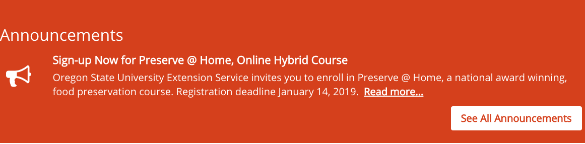
Example announcement teaser on a landing page
Announcements in a county or program group automatically show up for that county or program. They will also show up for counties and programs specified in the “additional counties” and “additional programs” fields. You can add an announcement to a topic page using the “announcement topic” field.
Teasers will only display during the dates specified in the “display dates” field.
Article
What Is an Article
A text-based piece of educational content. This is the preferred way to enter educational content owned by OSU Extension.
Articles stay on the site long-term, so they shouldn’t contain content that is only relevant for a short time. Use newsletter issues or announcements for these instead.
Who Can Add Articles
Members of Content Team groups.
Instructions for Articles
On the edit screen for an article, you will see the following fields:
- Title: the title of the article
- Summary/deck: a short description of the contents of the article that display in the teaser
- Content: the full article content
- Images: images that go with the article. These will display in a column on the right-hand side of the article’s text.
- Thumbnail: image that displays in the article’s teaser. If this is empty, it will use the first image in the “images” field. If this is empty, it will use a default image based on the topic.
- Topics, Keywords, Programs, and Regions: see below
- Author and Publishing Information: information about the content for future maintenance.
- If the content’s author is an OSU Extension employee, start typing their name into the first “Author(s)” field and select them when they come up. This will associate the content with their profile on the site.
- If the content’s author is not an OSU Extension employee (including OSU employees who don’t have an Extension appointment), enter their information in the “Non-Extension Author(s)” fields.
Quick Tip: Web visitors often scan content on the web to see if it is useful for what they need. Make your article more readable by using these Accessibility and writing for the web tips.
How and Where Articles Display
The tags in the “Topics, Keywords, Programs, and Regions” section of the edit screen determine where the article displays.
- Topic: It will show in the “Browse All Resources” page for the specified topic(s). Other content tagged with the topic will show at the bottom of the article in a “Related Resources” section.
-
Program: If the specified program has added a “Program Tagged Content List” section to one of its pages, it will show up there. See the Subpage section for more information.
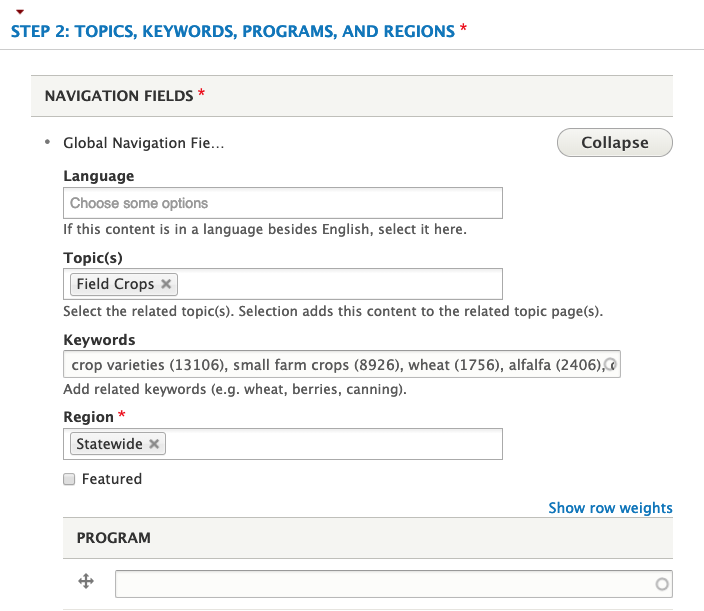
Counties and Programs can display articles on a page by adding a “featured content” section.
Collection
What Is a Collection
A grouping of existing pieces of educational content. Examples:
- A series of articles or documents that make up a course
- Content for a specific audience
Collections must be maintained by the content team. This can be time consuming. As new content is added to the website, it must also be manually added to the collection. This doesn’t happen automatically as it would for content tagged with a Topic (see Displaying and Organizing Content on Other Pages for more information). Collections may have gaps if new content is not added or if all related content wasn’t added when first creating the collection.
Collections serve a specific purpose and are not a solution for all needs, especially where the website is helping to organize the content too. You don’t usually need a collection for grouping content based on geographical region or topic. Filters on topic pages can accomplish this.
Who Can Add Collections
Members of Content Team groups.
Instructions for Collections
Before you create a collection, be sure to find (or add to the site, if needed) all the content that should be part of it.
On the edit screen for a collection, you will see the following fields:
- Title: the title of the collection
- Short Description: a summary of the collection’s contents that will show in the teaser
- Introduction: text that will appear before the collection items
-
Items: the pieces of content in the collection
- To add a piece of content, click “Add Collection Item.” Then click the “Select” button to open the content browser and select the piece of content.
Troubleshooting Tip: The content browser allows you to select multiple pieces of content for a single collection item. However, we recommend selecting only one at a time. This makes it easier to organize content: collection items can be reordered, but pieces of content in a single collection item will always be in the order they were selected.
- To organize content into sections with titles, click “Add Collection Section.” This will provide you with fields where you can specify the title of the section and the pieces of content that appear in that section.
- For More Information: text that will appear after the collection items
- Thumbnail: image that will display in the teaser. If this is empty, it will use a default image based on the topic.
- Topics, Keywords, Programs, and Regions: see below
- Author and Publishing Information: information about the content for future maintenance
- If the content’s author is an OSU Extension employee, start typing their name into the first “Author(s)” field and select them when they come up. This will associate the content with their profile on the site.
- If the content’s author is not an OSU Extension employee (including OSU employees who don’t have an Extension appointment), enter their information in the “Non-Extension Author(s)” fields.
How and Where Collections Display
Collections display just like articles, educational documents, and other pieces of educational content. They display on topic and program pages based on the tags in the “Topics, Keywords, Programs, and Regions” section of the edit screen.
- Topic: It will show in the “Browse All Resources” page for the specified topic(s). Other content tagged with the topic will show at the bottom of the collection in a “Related Resources” section.
- Program: If the specified program has added a “Program Tagged Content List” section to one of its pages, it will show up there. See the Subpage section for more information.
Counties and Programs can add collections to a page by adding a “featured content” section.
County Office
What Is a County Office
Represents information about a county and content on its main page.
Who Can Add County Offices
These have been set up for you. No one can add or delete them.
Instructions for County Offices
The edit screen for a county office has three sections:
- Landing Page: this is the main page visitors see for the county. Most of this page is automatically generated based on content you enter, but there are some things you can specify here:
- Hero image: the full-width image that appears at the top of county pages.
- Introduction: text at the top of the landing page to introduce the county.
- Quick links: a bar of up to four highlighted links (e.g. Facebook, Twitter, a newsletter, or a calendar).
- Featured content section: you can select a few content items to display on the landing page. We recommend listing newsletters or other content that is specific to the county.
- Other Content: this is where you can specify other content related to the county. Specifically, the introductory text for automatically-generated pages (see below) and custom sidebar links.
- County Info: the contact information, location, office hours, etc. for the county.
Quick Tip: Members of county groups can feature educational content entered by Content Teams on their pages. See: Organizing and Displaying Content on Other Pages.
How and Where County Offices Display
Each county has several automatically generated pages:
- Landing page: the "main" page for the county that contains contact information and other info that people are usually looking for on county pages. This page has the following sections:
- Introduction: text entered when you edit the county.
- Announcements: automatically generated list of announcements entered by or tagged with the county.
- Location and contact info: information entered when you edit the county.
- Quick links: content entered when you edit the county.
- Upcoming events: automatically generated list of events entered by or tagged with the county.
- What we do teaser: automatically generated list of focus areas entered by the county.
- Featured content: content entered when you edit the county.
- What We Do: lists the focus areas for the county (see below) as well as the programs that are tagged with the county.
- Events: lists events entered by the county or local programs in the county. Events entered by other groups and tagged with the county are displayed in a separate list.
- Faculty and Staff: lists the users on the site who work in the county.
There is a list of all counties on the Find Us page. The link to “Find Us” is in the top black menu bar at the top of every page. The sidebar on participant-based program pages also have links to the counties where that program is active.
Educational Document
What Is an Educational Document
A document (PDF, Word Document, Excel spreadsheet, or PowerPoint presentation) containing educational information.
In almost all cases, educational documents would work better as articles. This makes the content more accessible, searchable, and maintainable. Articles can also be saved and printed. Content should only be an educational document if:
- it is slides from a presentation,
- it has a lot of complex, in-context graphics or formatting, or
- it is a fillable or otherwise interactive document.
Educational documents are not appropriate for program forms, event information, driving directions, and other content that is not educational. Instead, these should usually be program resources, events, newsletters, or announcements.
Quick Tip: There are several options available for you to upload files. The best place depends on the audience the document is intended for, whether it will have new versions in the future, and whether it should be private to a certain group. See File Management for more information.
Catalog publications should not be added as educational documents. These are added and maintained by EESC.
Important Note: Be sure you have permission to share the file before you upload it to the Extension website. See Copyrighted Content.
Who Can Add Educational Documents
Members of Content Team groups.
Instructions for Educational Documents
On the edit screen for an educational document, you will see the following fields:
- Title: the title of the document
- Document Type: this will display as a label in the document’s teaser. It helps to provide context to visitors. If empty, “Educational Document” will display.
- Document Upload: upload the document. When you upload from your computer, you will need to name the document again. You can use the title, the file name, or whatever will help you find it again if you need it in the future.
- Short Description: a summary of the document’s contents that will show in the teaser
- Thumbnail: the image that will show in the teaser. If this is empty and the document is a PDF, it will use an image of the first page of the document. If the document is not a PDF, it will use a default image based on the document’s topic.
- Topics, Keywords, Programs, and Regions: see below
- Author and Publishing Information: information about the content for future maintenance.
- If the content’s author is an OSU Extension employee, start typing their name into the first “Author(s)” field and select them when they come up. This will associate the content with their profile on the site.
- If the content’s author is not an OSU Extension employee (including OSU employees who don’t have an Extension appointment), enter their information in the “Non-Extension Author(s)” fields.
How and Where Educational Documents Display
The tags in the “Topics, Keywords, Programs, and Regions” section of the edit screen determine where the educational document displays.
- Topic: it will show in the “Browse All Resources” page for the specified topic(s)
- Program: If the specified program has added a “Program Tagged Content List” section to one of its pages, it will show up there. See the Subpage section for more information.
Counties and Programs can add educational documents to a page by adding a “featured content” section.
Event
Video:
What Is an Event
An event that a visitor to the website could attend. If it isn’t a gathering someone can attend, it shouldn’t be an event. This includes deadlines, office closures, and “services” such as a plant clinic or hotline. Instead, these should be announcements.
Why Create Events
- Showcase and track the amount of on-the-ground programming that you do
- Expand your outreach to local and new audiences about your events
- Have a place to direct people for learning more and registering for the event
- Can enter once and have it fed to the OSU calendar (and Forestry Extension page if relevant)
- Be able to send specific events to interested people through future digital strategy
- Find out which events are most viewed and by what audiences through analytics
Who Can Add Events
Any user on the site. If an event applies to more than one county or program, coordinate and make sure to add it only once.
Quick Tip: If an event has been entered that needs to be edited or removed from your page, you should contact the uploader of the event. See Working with Other Content Authors.
Instructions for Events
On the edit screen for an event, you will see the following fields:
- All Day Event: indicates that an event takes place all day. If checked, you will not need to fill in the time fields for the event date.
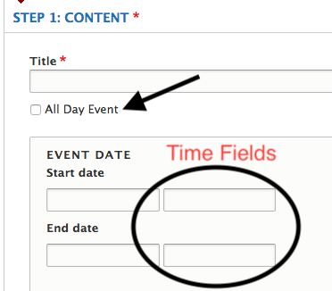
- Event Date: the date(s) when the event occurs
-
Event occurs multiple times in the specified period: check this box if you are entering an ongoing event such as a plant clinic or hotline that has regular hours over the date range you specified. This will reveal a field where you can enter those hours more specifically.

We also recommend that you check the “All Day Event” box for these events in order to hide the time fields from the event date and prevent confusion.
-
Short Description: a short description of the event
- Full Description: the full event description
-
Event location fields:
- The field asks “Where will this event be held?”
- If “At a county office,” then select the county office from the drop-down field that appears. The address field will get automatically filled in.
- If “At another non-office location,” type the name of the location into the search field on the map. The address fields below will get automatically filled in.
- If the address is not yet known or private, type “To Be Determined” or “To be provided to registrants” in the location name. Then enter the city, state, and ZIP code.
- If “Online-only,” no address needs to be provided.

- Room/building number: include if needed
Troubleshooting Tip: If you change an event from an existing location to a custom address, the old location may still show when you save. To correct this:
- For the field “Where will this event be held?” select “At a county office.”
- Change the drop-down list to --None-- which unsets the existing location.
- Click the “At another non-office location” button and enter the new address.
- Save.
-
Event Cost: how much it costs to attend the event
- Registration Link: a link to register for the event online. If you enter the link here, you don’t need to enter it in the description.
- Contact name, email, and phone: person to contact with questions about the event. This information is required by OSU’s calendar system, which pulls events from the Extension website.
-
More information or promotional flyer: uploaded flyer or registration form for the event
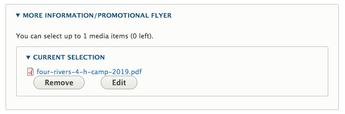
- Important Note: For accessibility, it is important that any information in a flyer is also included in another field on the event (e.g., in the full description field). See Accessibility.
- Thumbnail: an image for the event

-
Additional calendar: used to export events to other calendars and create narrowed-down event lists on program and county pages
- Additional counties or programs: other counties and programs where the event should show. You don’t need to include the county or program you are using to enter the event.
- Topics: specifies which topic pages the event should show on.
How and Where Events Display
Event teasers will only display on pages until the event ends. They contain the event title, dates, and the city in which it takes place (or “Online” if it is a webinar). They show on the following pages on the site:
- Topic pages: events tagged with the topic in the “Topics, Programs, and Counties” section of the edit screen
- Program pages: events entered by the program’s group or tagged with the program in the “Topics, Programs and Counties” section of the edit screen.
- County pages: events entered by the county’s group or tagged with the county in the “Topics, Programs, and Counties” section of the edit screen.
- County subpages: Members of a county group can set up event lists on subpages that only show a subset of events for that county. These events must be:
- added through the county group or tagged with that county, and
- tagged with a specified additional calendar.
All Extension events will be automatically exported to OSU’s main calendar, Localist. Some important notes about this process:
- Localist pulls events from the Extension website each night.
- It pulls both new events and updates to existing events.
- Uploaded flyers or other documents on the event will only display on the Extension website, not Localist.
- If you delete an event before it is over (e.g., if you noticed it was a duplicate), it will show as “cancelled” in Localist.
The FNR Extension website pulls events from the Extension website when “Forestry Extension” is selected under “additional calendars.”
Local Focus Area (Available mid April)
What Is a Local Focus Area
Information about Extension activities, work, or research done in a county or combined station that relates to a program or topic area. These are intended to act as a link between county pages and topic or program pages. You can highlight content that is especially relevant locally, but try to use topic pages to present educational content.
Who Can Add Local Focus Areas
Members of County Office groups.
Instructions for Local Focus Areas
On the edit screen for a focus area, you will see the following fields:
- Short description: this will display in the focus area's teaser, which shows up on county pages and search results.
- Thumbnail: this will display in the focus area's teaser, which shows up on county pages and search results.
- Display on county landing page: three focus area teasers display on each county landing page. Ones that have this box checked show up first.
- Program area: the program area the focus area relates to. This is used for internal organization and reporting only.
- Marketing category: which of the Extension marketing categories the focus area relates to. This is used for internal organization and reporting only. It may also help coordinate content between county pages and county pull sheets and other marketing materials.
- Topic: the topic(s) the focus area relates to. Selecting a topic here will cause a link to it to appear at the bottom of the focus area's page (see below).
- Contact information: if the focus area has specific contact info that is different than the main county, enter it here.
- How to display: you have three options:
- Link to a local program: this will allow you to select a local program (MG or 4-H). Links to the focus area will take visitors directly to the landing page for that local program.
- Link to an existing focus area in another county: if you would like to share a focus area with another county (e.g. for a regional focus area), select it here. Links to the focus area you create will take visitors directly to the existing focus area.
- Display a custom page: this creates a new page for the focus area. The following fields are available for this page:
- Hero image: large image that displays at the top of the page.
- Introduction: text at the top of the page to introduce the focus area.
- Summary/about: an additional text area (with a full-screen background image) for more information about the focus area.
- Featured users: specify the faculty/staff in the county who work in this focus area.
-
Page sections: additional content for the page. See the Page Sections section of this guide for more information. The following types of sections are available:
- Call to action: link to content or an external website with a custom title, description, and image.
- County events list: list of events entered by or tagged by the county. You can narrow the events shown by either the topic(s) or "additional calendar" the events are tagged with.
- Custom content list: One or more pieces of content with a custom section title and description. The first three items selected will show as teasers with thumbnails. The remaining selected items will display in a simpler text-only list.
- Highlighted content item: a piece of content with a custom description and full-width background image.
- Image slider: a slideshow of uploaded images.
- Quick links bar: a full-width bar that contains up to four highlighted links (e.g. to Facebook, Twitter, a newsletter, or a calendar).
- Video: a video from YouTube, Vimeo, or OSU Media Space.
How and Where Local Focus Areas Display
All focus areas entered by a county group will show up on an automatically-generated "What We Do" page for the county. To reorder the focus areas, click the pencil icon that appears when you hover over the page title and select "Reorder Focus Areas".
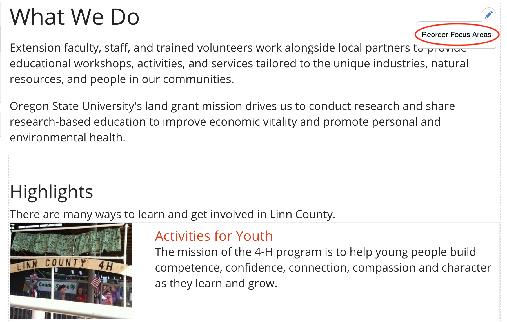
Example of a how to Reorder Focus Areas
Three focus areas will display on the county landing page with a button to see the full list. You can control which focus areas show up here using the "Display on County Landing page" checkbox on the focus areas.

Newsletter Issue
What Is a Newsletter Issue
Newsletter issues can be documents, links to an email newsletter service, or content entered into the website. They are organized into newsletter containers. For example the GROWING newsletter container includes the issues for Nov/Dec, Sept/Oct, July/Aug, etc.
Who Can Add Newsletter Issues
Any user can add newsletter issues. However, you must enter an issue of a newsletter through the same group as the newsletter it belongs to.
Instructions for Newsletter Issues
Step 1: Create the Newsletter Container
The first time you upload a newsletter, you will need to create a container to hold all the issues together. To do this, go to the edit screen for a Newsletter Issue. Then click the “create a Newsletter container” link under the dropdown list of available newsletters.
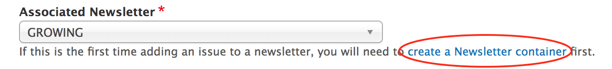
Step 2: Create Issues for the Newsletter
On the edit screen for a newsletter issue, you will see the following fields:
- Title: a title distinguishing it from other Issues (e.g. “GROWING: May - June 2019”)
- Associated Newsletter: the newsletter to which this issue belongs
Troubleshooting Tip: If the newsletter you want isn’t in the list, one of two things is happening:
- you aren’t adding the issue through the group the newsletter belongs to, or
- the newsletter hasn’t been created yet.
- Issue Type: “Web Content,” “File Upload,” or “Link to Issue”
- File Upload Issues: This type of issue consists of a document uploaded to the website. When you choose this option, you will see a file upload field.
- Linked Issues: This type of issue consists of a page or document hosted on another website. This includes newsletters sent via MailChimp or in Box. When you choose this option, you will see a field to enter the URL of the issue.
- Web Content Issues: This type of issue consists of content entered into the website. When you choose this option, the newsletter issue acts like a subpage. See Page Sections for information about adding and arranging content on the page.
- Short Description: the Table of Contents or description of what visitors can find in this issue.
- Author and publishing information: Previous issues are arranged based on the “Date Published or Revised” entered here.
- If the content’s author is an OSU Extension employee, start typing their name into the first “Author(s)” field and select them when they come up. This will associate the content with their profile on the site.
- If the content’s author is not an OSU Extension employee (including OSU employees who don’t have an Extension appointment), enter their information in the “Non-Extension Author(s)” fields.
Quick Tip: Web visitors often scan content on the web to see if it is useful for what they need. Make your newsletter content more readable by using these Accessibility and writing for the web tips.
How and Where Newsletter Issues Display
Newsletter containers display automatically on topic and program pages based on their tags.
They can also be added to topic landing pages, program pages, and county pages by adding a “Featured Content” or “Featured Resources” section.
Newsletter issues display in a list on a single page for their Newsletter container.
Displaying Newsletter Sign-Up Forms
If you have a form people can use to sign up for your newsletter, there are several ways to display it on the site.
- On the edit screen for the Newsletter container, there is a field for a “subscribe link.” You can enter a link to the form and it will display above the list of the issues for that newsletter.
- If you want to add a link to the form on a program or county page, you can add a “button link” on the desired page. See the Subpage section below for more information.
- MailChimp and other email management systems often give you an embed code so you can display the sign-up form directly on a web page. Here are instructions for how to get an embed code from MailChimp. Once you have the embed code, add a “Text” section to the page. Click the “Source” button in the text editor to switch to HTML mode and paste the embed code there. You will see the form on the page when you click “Save.”
Online Resource
What Is an Online Resource
A link to educational content housed on another site. Use this for any content that is copyrighted by another organization.
Who Can Add Online Resources
Members of Content Team groups
Instructions for Online Resources
On the edit screen of an online resource, you will see the following fields:
- Title: the title of the resource
- Website URL: the link to the resource
- Short Description: a description of the resource
- Thumbnail: an image to go with the resource. If empty, it will use a default image based on the tagged topic.
- Topics, Keywords, Programs, and Regions: see below
- Author and Publishing Information: information about the content for future maintenance
- If the content’s author is an OSU Extension employee, start typing their name into the first “Author(s)” field and select them when they come up. This will associate the content with their profile on the site.
- If the content’s author is not an OSU Extension employee (including OSU employees who don’t have an Extension appointment), enter their information in the “Non-Extension Author(s)” fields.
How and Where Online Resources Display
The tags in the “Topics, Keywords, Programs, and Regions” section of the edit screen determine where the online resource displays.
- Topic: it will show in the “Browse All Resources” page for the specified topic(s)
- Program: If the specified program has added a “Program Tagged Content List” section to one of its pages, it will show up there. See the Subpage section for more information.
Counties and Programs can add online resources to a page by adding a “featured content” section.
Program
What Is a Program
A program on the Extension website is an externally facing activity that members of the public can participate in. Examples include 4-H programs and the various Master training programs.
This definition is narrower than what people in Extension normally mean by “program.” It’s not an industry-focused program, informational center program, or Extension program area. These can be highlighted in projects, topic pages, or county “focus areas,” which is a new content type coming in early 2019.
| Program | Project | Topic Page |
|---|---|---|
| - Public participation or local engagement is a key component. - Web content updates regularly and participants need to access it frequently. |
- Extension activity with impact or outputs that are of interest to the public. - Often includes partnership with external organizations. - May seek input from the public (e.g., a survey), offer courses, or provide targeted information, but not ongoing participation. |
- Ongoing high-level activity area such as “Dairy Extension” or “Fire Program.” - Experts collaborating in working groups that develop educational materials. - May also include events, projects, and participatory programs. |
Most programs have a single main “statewide” program group that maintains content. Counties can point visitors there and add some locally relevant information if applicable. However, some programs (namely, 4-H and Master Gardener) have dedicated staff for maintaining specific local content. These have local program groups in addition to the statewide program group.
Who Can Add Programs
These have been set up for you. No one can add or delete them.
Instructions for Programs
The edit screen for a program has three sections:
- Landing Page: This is where you control the content on the program’s landing page. It acts like a subpage. See the Subpage section of this chapter for more information.
- Sidebar: You can add additional links to the sidebar on program pages. These will show up on every page associated with the program.
- Program Info: This is where you can edit the description, thumbnail image (photo or square graphic companion logo that has been approved by OSU), tags, and other information for the program.
Quick Tip: Members of program groups can feature educational content entered by Content Teams on their pages. See: Organizing and Displaying Content on Other Pages.
If your program has an existing website, you can enter the link in the “Program Info” section of the edit page. Visitors will go directly to this site when they click on the program. If you would like to have a short description about the program, show faculty or staff, and add events or newsletters to show here and other places on the Extension website, before directing people to the external site, do not add the link to the “Program Info” section. Instead hyperlink to it on the program landing page using a “Button Link” section.
How and Where Programs Display
There is a list of all programs on the programs page. This is in the top black menu bar at the top of every page under “Get Involved.”
You can tag a program with topics and counties in the “Program Info” section of the edit screen. This will create a link to the program on the landing pages of the specified counties and on the Get Involved menu on the specified topic pages.
Program Resource
What Is a Program Resource
A document or link that is necessary for participation in a program (see definition of program above). Examples include forms, policies, or procedures. These should be items that are only of interest to participants in a specific program.
It is very important that educational materials that are useful to the general public NOT be entered as program resources but rather another content type through a Content Team group. Program resources are only seen and needed by participants in a program, and so are more difficult for a general audience to find.
Who Can Add Program Resources
Members of Program groups
Instructions for Program Resources
On the edit screen for a program resource, you will see the following fields:
-
Resource Type:
- Selecting “External Website” will provide a field for you to enter a URL.
- Selecting “Document” will provide a field for uploading a document. You can also specify alternate versions of the file. This is for documents that are available in multiple formats (e.g. PDF, Word) or languages. The different versions are differentiated by the names you give them when you upload them.
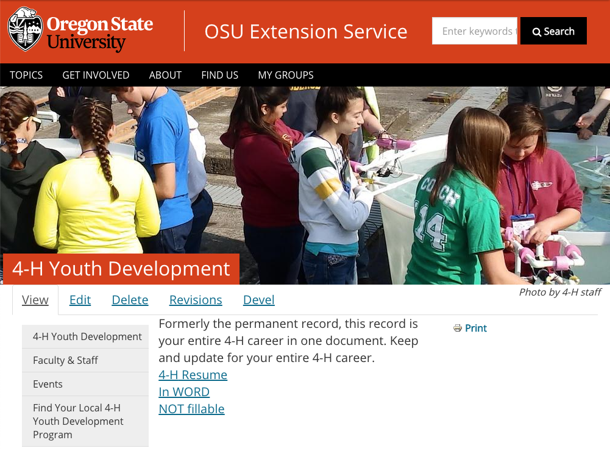
Example of a program resource with multiple file versions.
-
Description: a description of the resource that displays in the teaser
- Type: This field is for organizational purposes and will not affect how the program resource displays to visitors to the site. If none fit, select “Other.”
- Category: To organize program resources, you can configure categories for them (see below).
- This resource is for active program volunteers: This is for internal informational purposes only. In the future, it could be used to pull information into a volunteer management solution Extension may adopt.
- Thumbnail: an image for the resource that displays in the teaser. If empty and the resource type is “document,” it will use an image of the first page of the document.
Quick Tip: If you will need to replace a program resource document with a new version in the future, consider taking advantage of the file versioning functionality available in Box. See: File Management for more information.
Managing Program Resource Categories
To tag a program resource with categories, you must first create the categories. Categories are program specific. Every program group (including local program groups) has its own set of categories.
To add or edit a category, go to the Group Content page for the group the resource is in. Click the “Categories” link at the top of the page.
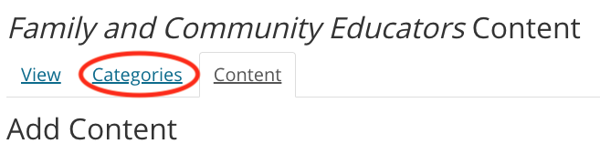
This will take you to a page with a list of available categories. It also shows how many resources are tagged with each category and how many page sections are set up to display that category.
When you add or edit a category, you can enter both a name and a description. These are only visible on edit screens and won’t show publicly to visitors to the site.
Where and How Program Resources Display
Program Resources display in “Program Resource List” sections on program subpages. These are sorted alphabetically by default, but you can customize the order. See the Subpage section below for more information.

Local programs can display program resources from their statewide program. To do this, add a “Program Statewide Resource List” section to a page. You can narrow the resources shown by the categories configured by the statewide program.
Case Study: BBB Program Resources
Better Bones and Balance uses categories to organize their Program Resources: 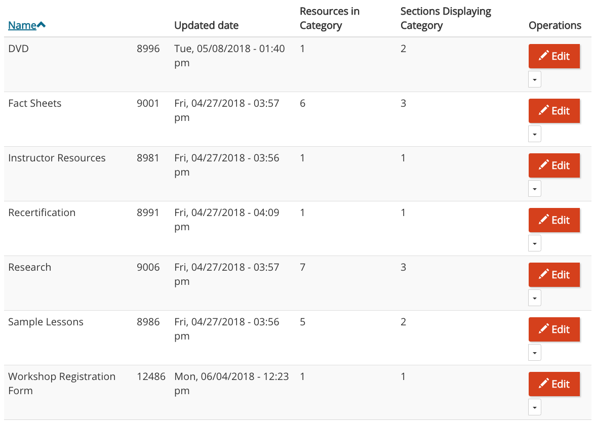 Their program subpages roughly correspond to these categories:
- DVD -> Better Bones and Balance Store Items
- Fact Sheets -> Research & Publications
- Instructor Resources -> Instructor Resources
- Recertification -> Become a BBB Instructor
- Research -> Research & Publications
- Sample Lessons -> Instructor Resources
Project
What Is a Project
A project on the Extension website is an Extension activity with impact or outputs (such as a toolkit or calculator) that are of interest to the public. They often include partnerships with external organizations.
Projects differ from programs in that they do not involve ongoing participation with members of the public, such as volunteering or increasing levels of involvement. However, projects may seek public input through surveys, offer courses, or provide targeted information.
Who Can Add Projects
EESC will set up projects for content team groups upon request.
Instructions for Projects
The edit screen for a project has the following fields:
- Short description: a description of the Project that shows up in the tease.
- Thumbnail: an image representing the Project that shows up in the teaser
- Website URL: If your project already has it’s content on an external website, you can enter the link here. Visitors will be taken directly to that site when they click on the Project.
-
Content: the content that shows on the Project’s page (see Page Sections for more information). The following types of sections are available to add to the page:
- Image: an uploaded image
- Button Link: a link styled as an orange button
- Text: formatted text
- Featured Content: links to other content on the site
- Project Materials List: uploaded documents or links to other sites displayed in a list
- Project Columns: allows you to display other sections in two columns (on large enough screens)
- Video: a video hosted on YouTube, Vimeo, or OSU Media Space
- Tabbed Section: allows you to display other sections in tabs, where only one tab is displayed at a time and visitors can switch between them

-
Tags: includes topic, program area, program, and counties
Where and How Projects Display
There is a list of all projects on the projects page. This is in the top black menu bar at the top of every page under “Get Involved.”
If you tag a Project with a topic, it will show up on the “Our Work” page for that topic. Topic committees may also feature projects on the topic landing page. Programs and counties can add projects to their pages by adding a “featured content” section and selecting the Project.
Project Supporting Material
What Is a Project Supporting Material
Content that provides context or additional information about a Project (see above). This may include instructions for use of the Project’s outputs, links to surveys, links to purchase options, or information about supporting the project.
Who Can Add Project Supporting Materials
Members of Content Team groups that contain the project.
Instructions for Project Supporting Materials
The edit screen for a project supporting material has the following fields:
- Associated Project: the project that the material supports. This is necessary because a content team may contain more than one Project.
- Type: the type of material. This is used for informational or organizational purposes only, and isn’t seen by the public.
- Website URL: If your project already has it’s content on an external website, you can enter the link here. Visitors will be taken directly to that site when they click on the Project.
- Content: the main text that shows on the Material’s page
- Page Sections: additional content that shows on the Material’s page (see Page Sections for more information). The following types of sections are available to add to the page:
- Image: an uploaded image
- Button Link: a link styled as an orange button
- Text: formatted text
- Text with Background: formatted text with a background image that spans the entire screen
- Featured Content: links to other content on the site
- Project Materials List: uploaded documents or links to other sites displayed in a list
- Project Columns: allows you to display other sections in two columns (on large enough screens)
- Video: a video hosted on YouTube, Vimeo, or OSU Media Space
- Call to Action: text, image, and link to encourage visitors to the page to take an action
Where and How Project Supporting Materials Display
All supporting materials tagged with a Project will show up in a sidebar on that Project’s page.
By default, the newest materials show up at the bottom of the sidebar. If you are a member of the group that contains the Project, you can customize the order of materials in the sidebar by clicking the “Reorder Pages” button at the bottom of the sidebar. This will take you to a page where you can drag and drop the materials into the order that you want. To nest one page under another, drag the nested page beneath it’s parent and then to the right. To un-nest a page, drag it back to the left. When you are done, click the “Save” button.
Subpage
What Is a Subpage
A customizable page for organizing content and providing additional context or information about a program.
Quick Tip: Web visitors often scan content on the web to see if it is useful for what they need. Make your page’s content more readable by using these Accessibility and writing for the web tips.
Who Can Add Subpages
Members of program groups.
Instructions for Subpages
The edit screen for a subpage contains fields for the page title, hero image, and some basic text content. The hero image displays as a banner at the top of the page, so it should be about 2000px wide by 400px high. If this is empty, it will use the hero image of the county or program in its group.
Quick Tip: There is a link above the first text box on the edit screen that says "Edit Summary". When you click this, a smaller text box appears. The text in this box is what displays in teasers for the subpage. These appear in search results or when someone selects the subpage as featured content.
Content for subpages is primarily added through page sections (see Page Sections for more information). These types of sections are available
- Button Link: a link to another page (in or outside of the Extension site) styled as a large orange button
- Call to Action: a link to another page (in or outside of the Extension site) that includes a description and image
- Featured Content: links to content in the Extension site
- Image: an image with optional caption and alternative text to describe the photo
- Quick links bar: an orange bar across the page that can contain links to social media or important pages
- Text: a simple text box with formatting such as bold or italic
- Text with background: a text section with a background image that stretches all the way across the page. This image should be at least 2000px wide.
- Two-Column Section: allows you to display other sections in two columns instead of one (in large enough screens)
- Video: an embedded video from YouTube, Vimeo, or OSU Media Space
- Program Events List: shows a list of events that have either been added to the program or tagged with the program by another group.
-
Program Resources List: a list of program resources associated with the program.
- When you add this section, you can specify one or more “Category to display.” Only resources tagged with all specified categories will show in the section.
- If there are no program resources with the specified category, the program resource list will not show up and the “title” and “description” will stay invisible to the public. If you want the description text to be visible on the Subpage regardless, it’s best to use a “Text” section instead.
- By default, resources are sorted alphabetically. You can reorder the resources in a list by hovering over the list, clicking the pencil icon that appears to the right of the title, and selecting “Reorder items.” This will take you to a page where you can drag and drop the resources into the order you want. Click save and you will go back to the page you were on.

- You will not see the resources pulled in to the section until you click “Save” and view the page.
- Program Statewide Resources: a list of program resources associated with the local program’s statewide “parent.” This is currently applicable only to 4-H and Master Gardener.
- Program Tagged Content List: an automatically generated list of content in the site that has been tagged with the program.
- Statewide Program Events List: shows a list of events that have been entered by a local program’s statewide “parent.”
Quick Tip: For help featuring educational content entered by Content Teams on their pages, see: Organizing and Displaying Content on Other Pages.
Where and How Subpages Display
Subpages display in program sidebars. You can reorder subpages in the sidebar by clicking the “Reorder Pages” button at the bottom of the sidebar.

This will take you to a page containing a list of pages in the sidebar.

Use the arrow controls next to each page to drag them into the order you want. When you’re finished, click the “Save Order” button at the bottom of the page.
To nest one or more pages under another, drag the nested page to the right and you’ll see it slightly indented. You can do this for as many menu pages as you would like, but only one level down. If you want a page to no longer be nested, drag it back to the left.

Note that sidebars contain some automatically generated pages at the top, above the listed subpages, that cannot be reordered.
You can add links to external sites, such as a college or association site, to the bottom of the sidebar. To do this, edit the program or county the sidebar belongs to. Open the “Sidebar” tab on the edit screen and click the “Add Button Link” button.
Topic Page
What Is a Topic Page
A “topic page” actually consists of several pages, which are listed in a menu across the top of the landing page:
- Landing Page (“home” for the topic): the first page visitors see when they click on a topic. Here is a list of what this page itself consists of (items marked with a “*” are customizable by topic committees):
- Hero image*: large image across the top of the page
- Short description*: one or two sentences about the topic and the work Extension does relating to it
- Resource lists*: can be configured as needed
- About section*: more in-depth information about the topic and Extension’s work, optionally with a large background image
- Explore more resources*: links to other topic pages that contain content that may be of interest to visitors
- Upcoming events: the three closest upcoming events tagged with the topic
- Meet our experts*: if experts are selected by the topic committee, they will display here. Otherwise, the first four people with their “Expertise” set to the topic will display in alphabetical order
- Ask an Expert: for people to submit questions
- Browse Resources: all content in the site tagged with the topic
- Events: all upcoming events tagged with the topic
- Get Involved: all programs tagged with the topic
- Our Work: all projects tagged with the topic
- Our Experts: all users with their Expertise set to the topic
If there isn’t any content on a page, the link won’t appear in the menu.
Quick Tip: For guidelines to help decide what content to feature on a Topic Page, Planning and Evaluating Content.
Who Can Add Topic Pages
Topics are set up by the EESC web team. No one can add or delete a topic, but topic committee members are able to edit certain sections of the landing page. If you have content that doesn’t fit into an existing topic, you can request a new one for consideration. The following criteria are used to determine whether something should be a topic on the site:
- There is a reasonable amount of content for the topic
- At least one content team is associated with the topic
- User feedback or other data supports the need for the topic
- The topic has a user-friendly label, meaning:
- it is appropriate for its audience (e.g., if the content is generally targeted or industry targeted), and
- there evidence that web visitors understand and use the term.
- Other Content Teams that have entered or would enter content for the topic have been consulted and are willing to help with retagging content from their group.
You can request a new topic by submitting a support request.
The educational content that shows on topic pages is entered by content teams. A single topic page may showcase content from multiple content teams, and a single content team may enter content for multiple topics. Topic Committee groups are responsible for featuring content on topic pages. See Getting Started with Content - Topic Committees for more information.
Instructions for Topic Pages
On the edit screen for a topic landing page, you will see the following fields:
-
Hero image: the large image across the top of the page. Please use an image that is at least 2000px wide and 325px tall. When uploading an image, please be sure to set the “focal point” so it will display properly on all screen sizes.

-
Description: the short block of text that appears at the top of the page. Limit this to one or two sentences.

-
Related Topics: creates links on the topic landing page to other topics.

-
About Section: Click the “Add Text with Background” button to enter a longer description of the topic and an image to use as a background. Please use an image at least 2000px wide and tall enough to be a backdrop to the text you write. Remember to set the focal point when uploading it.

-
Landing page sections: You can add two different types of sections to the page:
- Custom topic section: a section title (e.g., “Featured Resources”), several pieces of manually selected content, and a manually entered link to see more content. A good option here is to use a link to the topic’s “Browse Resources” page with one or more filters already applied. Examples may be specific subtopics such as “Nutrients” or audiences such as “Coastal Region.” More than one Custom topic section can be added to highlight frequently looked for categories.
- Latest topic content: the newest three pieces of content tagged with the topic. It can be narrowed by content type to, for example, show only the newest three videos or Extension Catalog publications. More than one of these sections can be added.
 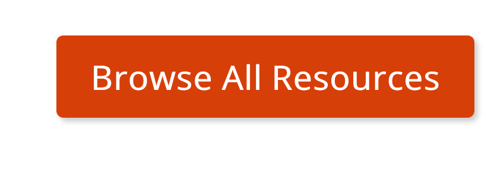
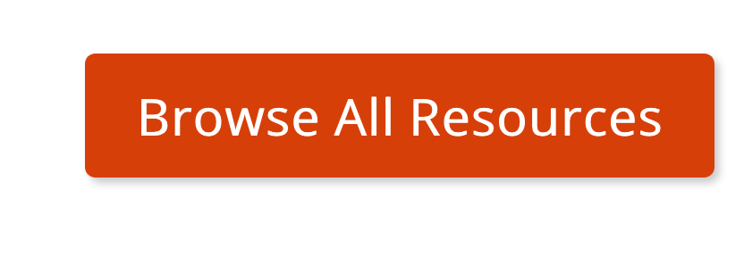 -
Featured experts: Enter the ONID usernames (not full names) of the people to show in the “Meet Our Experts” section. If none are selected, the first four people in alphabetical order with their “Expertise” set to the topic will show up.
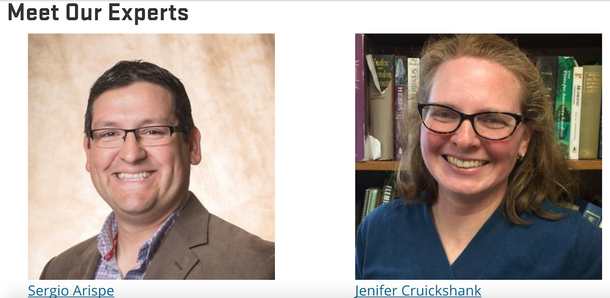
How and Where Topic Pages Display
The black menu bar at the top of every page contains a list of all topics. There are also links to all top-level topics on the home page.
We encourage counties to link to topics that are especially relevant to visitors from their county. This can be done via a “Button Link” or “Call to Action” section.
User Profile
What Is a User Profile
Information about a person. This includes contact information and information about the work they do.
Who Can Add User Profiles
All users on the Extension website are able to edit certain parts of their profile. This includes users who are not a member of any groups.
Instructions for User Profiles
To get to the edit screen for your profile, click on the “My Account” link in the footer of any page:

Then, click on the “Edit” tab at the top of your profile. The fields you are able to edit are in the “Profile” tab on the left-hand side of the edit screen.
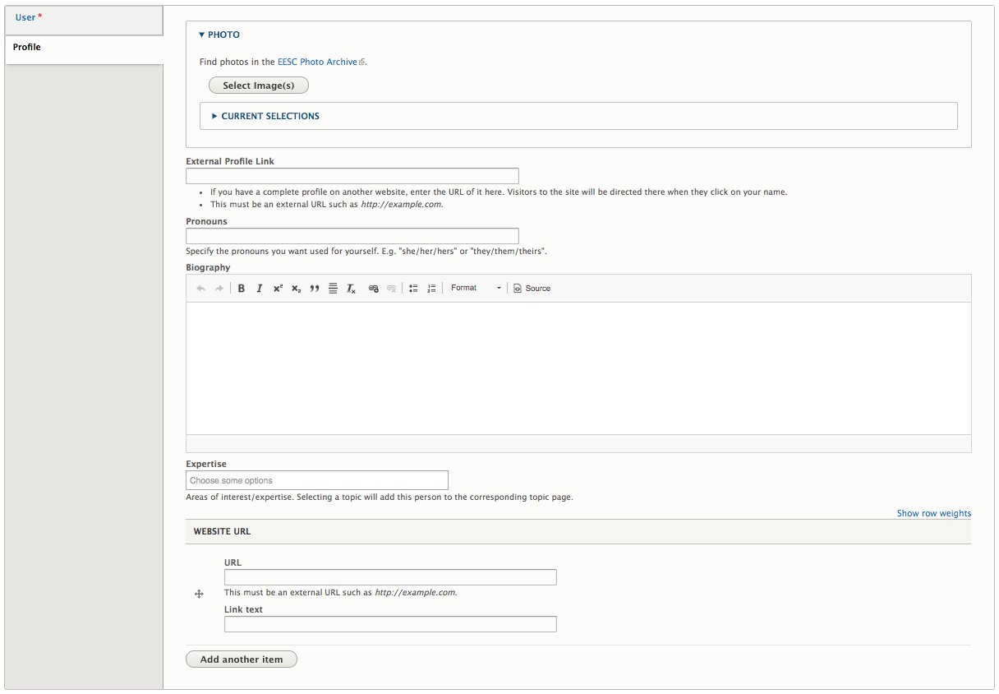
On the edit screen for your profile, you will see the following fields:
- Photo: a photo of yourself.
- External profile link: If you have a profile on another college website, you can link to it here. Visitors who click on you will go there directly.
- Biography: information about yourself and your work, including links or lists of publications.
- Expertise: the topic(s) in which you work. Selecting a topic here will list you as an “Expert” on that topic page. Feel free to list expertises that are not in the topic list in your Biography field.
- Website URL: You can link to other websites with information about you, such as a LinkedIn account.
For changes to other information, please submit a support request..
Where and How User Profiles Display
The black menu bar at the top of every page contains a link to the faculty and staff directory. This is a list of all people in Extension.
There are also narrowed-down directories on program, county, and topic pages. These depend on the tags given to the user.
People can also be found by typing their name in the Search field at the top of every page.
Video
What Is a Video
An informational video.
Who Can Add Videos
Members of content team groups. Note that members of county and program groups can add videos directly to their pages. See the Subpage section for more information.
Instructions for Videos
On the edit screen for a video, you will see the following fields:
- Video: You can embed a video from YouTube, Vimeo, or OSU MediaSpace.
- Description: a short description of the video. This is shown in the teaser as well as the full video page.
- Supplemental text: additional text to show on the full video page.
- Topics, Keywords, Programs, and Regions: See below.
- Author and Publishing Information: information about the content for future maintenance.
- If the content’s author is an OSU Extension employee, start typing their name into the first “Author(s)” field and select them when they come up. This will associate the content with their profile on the site.
- If the content’s author is not an OSU Extension employee (including OSU employees who don’t have an Extension appointment), enter their information in the “Non-Extension Author(s)” fields.
Important Note: All videos produced by or for Extension should be captioned for accessibility. See Accessibility for more information.
How and Where Videos Display
The tags in the “Topics, Keywords, Programs, and Regions” section of the edit screen determine where the video displays.
- Topic: It will show in the “Browse All Resources” page for the specified topic(s). Other content tagged with the topic will show below the video in a “Related Resources” section.
- Program: If the specified program has added a “Program Tagged Content List” section to one of its pages, it will show up there. See the Subpage section for more information.
Counties and Programs can add videos to a page by adding a “featured content” section.
Review of Terms
- Teaser: a condensed version of a piece of content that links to a separate page containing the full content. These usually contain the title, a thumbnail, and a short description of the content.
- Educational content: research-based materials that are meant to inform visitors about a topic
- Thumbnail: image representing content that will display in the content’s teaser. If none is specified for a piece of content, a default will be used if possible
- Landing page: the “main” page for a participant-based program, county, or topic
- Localist: OSU’s university wide calendar system. Automatically pulls events entered in the Extension website nightly.
- Program: an externally facing activity that members of the public can participate in
- Statewide program: the main group that maintains content for a program
- Local program: offshoot of a program that maintains content for a specific county or geographical region
- Project: an activity with impact or outputs (such as a toolkit or calculator) that are of interest to the public
- Focal point: specified point in an image that controls how the image is cropped when it is automatically resized. Set by moving the white “+” icon on the image preview in the image browser that appears when uploading or editing an image.